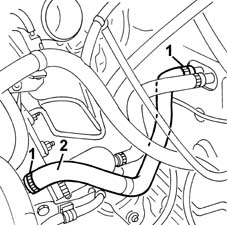
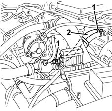

5010A16 heater/engine line - r r
- Path
- Procedures > 50 AUXILIARY UNITS > 5010 HEATING/VENTILATION - MISCELLANEOUS > 5010A heater pipes > 5010A16 heater/engine line - r r
- Kind
- repair procedure (removal / refitting; the operation number is the code)
- Applies to
- all engines; all production periods
- Interactive page
- https://sloeber94.github.io/elrnDB-fMltpl/en/#/2891760
Applies to: engines: 1.6 16v; all production periods
 Removing
Removing
 Refitting
Refitting1048A10 AIR CLEANER FILTERING ELEMENT - REPLACE
Position a suitable container for recovering the coolant fluid.
1. Loosen the pipe retaining bands.
2. Disconnect the pipe and remove it.

Applies to: engines: 1.6 16v; all production periods
Refitting
RemovingCheck that the pipe is not damaged and that there are no cracks which could affect the seal.
Reposition the pipe and connect it to the connectors.
Tighten the pipe retaining bands.
1048A10 AIR CLEANER FILTERING ELEMENT - REPLACE
Refill the engine cooling circuit using the recommended fluid.
 | Type | Component | Name | Qty. |
|---|---|---|---|---|
- | Fluid | ENGINE COOLING CIRCUIT | PARAFLU 11 | - |
Applies to: engines: 1.9 JTD 8V; all production periods
Removing
Refitting1048A10 AIR CLEANER FILTERING ELEMENT - REPLACE
1016A10 sound-proofing cover - r + r
Position a suitable container for recovering the coolant fluid.
1. Loosen the pipe retaining bands.
2. Disconnect the pipe and remove it.

Applies to: engines: 1.9 JTD 8V; all production periods
Refitting
RemovingCheck that the pipe is not damaged and that there are no cracks which would affect the seal.
Reposition the pipe and connect it to the connectors.
Tighten the pipe retaining bands.
1016A10 sound-proofing cover - r + r
1048A10 AIR CLEANER FILTERING ELEMENT - REPLACE
Refill the engine cooling circuit using the recommended fluid.
| Type | Component | Name | Qty. |
|---|---|---|---|---|
- | Fluid | ENGINE COOLING CIRCUIT | PARAFLU 11 | - |